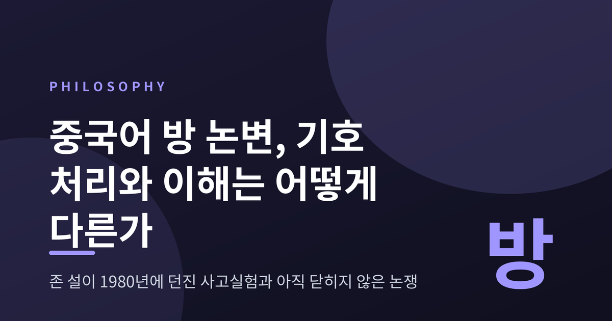
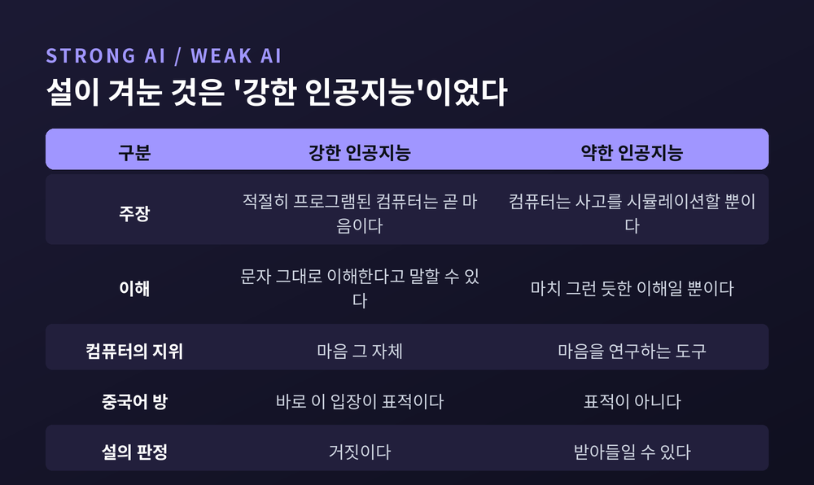
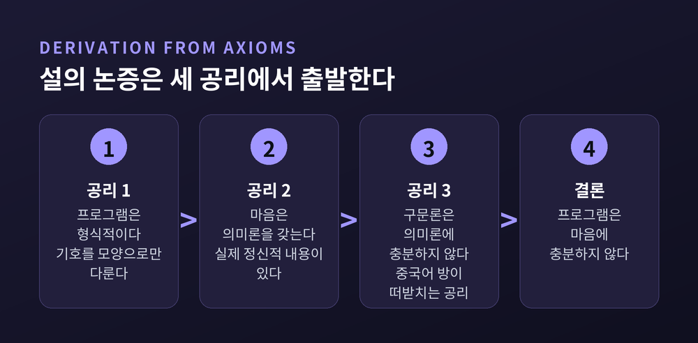
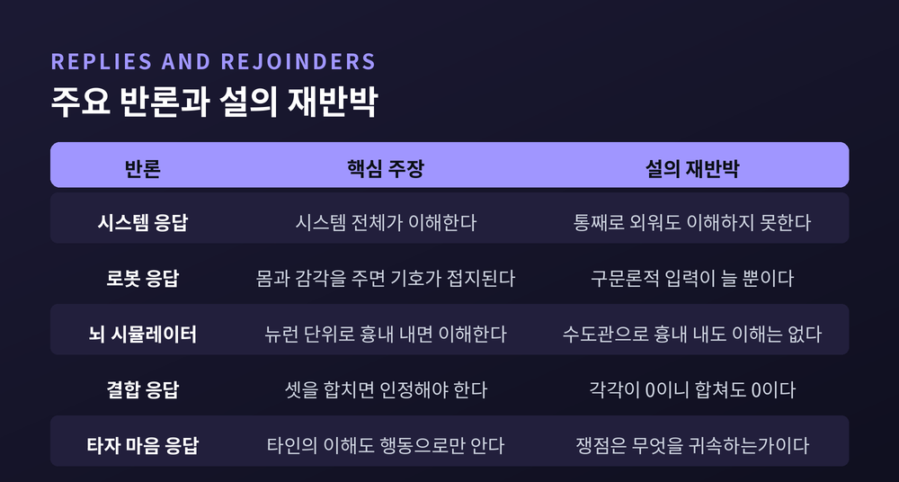
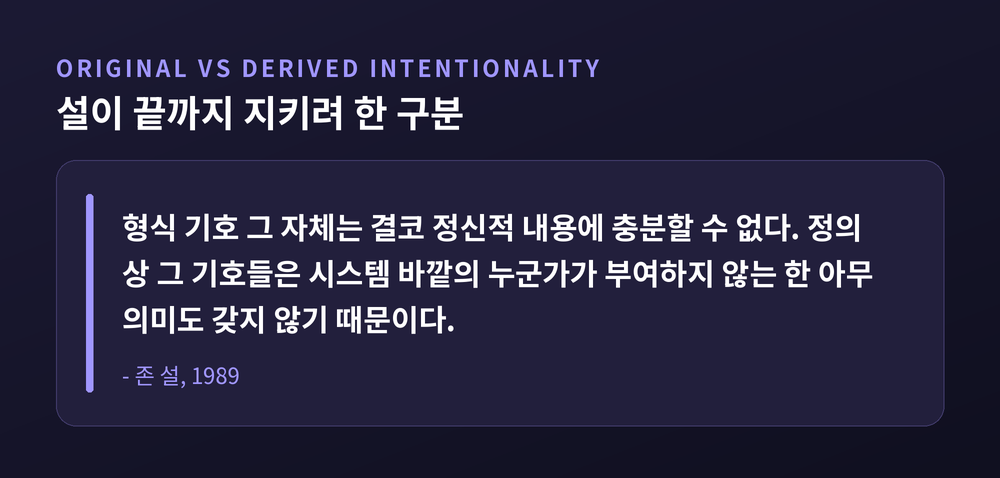
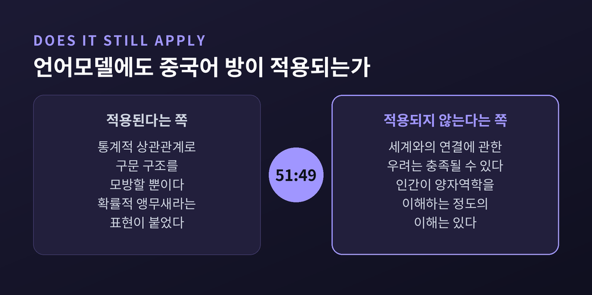

이번 글에서는 존 설의 '중국어 방' 논변을 정리해 보겠습니다. 방 안의 사람이 규칙에 따라 기호를 주고받아 중국어 원어민과 구별되지 않는 답을 내놓는다면, 그는 중국어를 이해하는 것인가. 이 한 장면이 어떻게 인지과학 전체를 흔든 논쟁이 되었는지, 그리고 어떤 반론들이 그것을 되받았는지 차례로 짚겠습니다.
세 줄 요약
논문의 제목은 「Minds, Brains, and Programs」입니다. 학술지 『The Behavioral and Brain Sciences』 3권에 실렸습니다. 논문 첫머리에 적힌 저자의 소속은 캘리포니아대학교 버클리 철학과입니다.
설정은 이렇습니다.
중국어를 한 글자도 모르는 영어 단일언어 화자가 방에 갇힙니다. 그는 중국어 문자가 잔뜩 든 첫 번째 묶음을 받습니다. 이어 두 번째 묶음과, 두 번째를 첫 번째와 대응시키는 영어 규칙집을 받습니다. 규칙은 한 형식 기호 집합을 다른 형식 기호 집합과 짝지어 줄 뿐입니다. 여기서 '형식적'이라는 말의 뜻은 명확합니다. 기호를 오로지 그 모양만으로 식별할 수 있다는 뜻입니다.
세 번째 묶음과 추가 지시문이 들어오고, 그에 따라 특정 모양의 기호를 되돌려 주라는 명령이 내려옵니다.
방 밖의 사람들은 이 묶음들에 각각 이름을 붙여 두었습니다. 첫 번째는 '스크립트', 두 번째는 '이야기', 세 번째는 '질문'. 그가 내보낸 것은 '답'. 영어 규칙집은 '프로그램'. 방 안의 그는 이 사실을 전혀 모릅니다.
그가 지시를 따르는 데 아주 능숙해졌다고 해봅시다. 설의 표현으로, 방 밖에서 보면 그의 답은 중국어 원어민의 답과 "절대적으로 구별되지 않습니다".
그래도 그는 중국어를 한 마디도 이해하지 못합니다.
설이 원논문에 적어 둔 대비가 이 상황을 가장 선명하게 보여줍니다. 영어 하위체계는 '햄버거'가 햄버거를 가리킨다는 것을 압니다. 중국어 하위체계가 아는 것은 '꼬불꼬불' 다음에 '꾸불꾸불'이 온다는 것뿐입니다.
설이 뽑아낸 결론은 짧습니다.
"방 안의 사람이 중국어 이해 프로그램을 구현하는 것만으로 중국어를 이해하지 못한다면, 다른 어떤 디지털 컴퓨터도 그것만으로는 이해하지 못한다. 컴퓨터인 한, 어떤 컴퓨터도 그 사람이 갖지 못한 것을 갖고 있지 않기 때문이다."
설이 겨눈 것은 그가 '강한 AI'라고 이름 붙인 입장입니다. 그의 인용으로 옮기면 이렇습니다. 컴퓨터는 마음 연구의 도구에 그치지 않으며, 적절히 프로그램된 컴퓨터는 곧 마음이고, 올바른 프로그램이 주어진 컴퓨터는 문자 그대로 이해한다고 말할 수 있다는 견해입니다.
반대편에는 '약한 AI'가 있습니다. 컴퓨터는 사고를 시뮬레이션할 뿐이라는 입장입니다. 그 이해는 '마치 그런 듯한' 것이지 진짜 이해가 아닙니다. 다만 마음을 연구하는 도구로는 유용합니다. 날씨를 연구하는 데 기상 시뮬레이션이 유용하듯이 말입니다.
여기서 오해를 하나 걷어내야 합니다. 중국어 방은 약한 AI를 겨냥하지 않습니다. "어떤 기계도 사고할 수 없다"는 주장도 아닙니다. 설 본인이 뇌는 기계이고 뇌는 사고한다고 말합니다. 논변이 겨누는 것은 오직 하나, 기호에 대한 형식적 계산이 사고를 산출할 수 있다는 견해입니다.
직접적인 표적은 튜링 테스트였습니다. 앨런 튜링은 1950년 『Mind』에 실린 논문에서, 컴퓨터가 온라인 대화에서 인간으로 통할 수 있다면 지능적이라고 인정해야 한다고 제안했습니다. 설의 좁은 결론은 프로그래밍이 이해하는 것처럼 보이게 만들 수는 있어도 진짜 이해를 산출하지는 못한다는 것이었고, 따라서 튜링 테스트는 부적절하다는 것이었습니다.
흥미로운 점은 튜링 자신이 그런 형이상학적 주장을 하지 않았다는 것입니다. 튜링은 그런 조건에서 컴퓨터에 사고를 귀속시키는 것이 정당화된다는 인식론적 주장에 자신을 한정했습니다. '사고가 무엇인가'에 대한 정의는 내리지 않았습니다.
논변의 실제 표적은 더 구체적이었습니다. 1970년대 후반 예일대의 로저 섕크 연구팀은 이야기를 이해하는 프로그램을 만들었다고 주장했습니다. 설의 원논문에 그 예시가 실려 있습니다. "한 남자가 식당에 들어가 햄버거를 주문했다. 햄버거가 나왔는데 새까맣게 타 있었다. 남자는 값도 치르지 않고 팁도 남기지 않은 채 뛰쳐나갔다." 여기서 "그 남자는 햄버거를 먹었는가"라고 물으면 사람은 이야기에 없는 말을 근거로 "아니오"라고 답합니다. 섕크의 프로그램도 같은 답을 냈습니다.

설은 1984년 이후 사고실험보다 형식적인 '공리로부터의 도출'을 앞세웠습니다. 1990년 판본의 공리는 셋입니다.
여기서 결론이 나옵니다. 프로그램은 마음을 구성하지도, 마음에 충분하지도 않다.
설은 네 번째 공리를 덧붙입니다. 뇌는 마음을 야기한다. 그러면 마음을 야기할 수 있는 다른 어떤 시스템도 적어도 뇌와 동등한 인과적 힘을 가져야 한다는 결론이 따라 나옵니다. 인공 뇌는 뇌의 특정한 인과적 힘을 복제해야 하며, 형식 프로그램을 돌리는 것만으로는 그렇게 할 수 없다는 것입니다.
폴과 패트리샤 처칠랜드 부부가 정확히 짚었듯, 중국어 방 사고실험이 하는 일은 이 도출 전체가 아니라 세 번째 공리를 떠받치는 것입니다.
왜 구문론에서 의미론이 나오지 않는가. 설의 근거는 논리학의 형식체계입니다. 기호 체계에서 규칙은 순전히 구문론적으로 주어지고, 의미론은 나중에 따로 부여됩니다. 설의 문장을 그대로 옮기면 이렇습니다. "형식 기호 그 자체는 결코 정신적 내용에 충분할 수 없다. 정의상 그 기호들은 시스템 바깥의 누군가가 부여하지 않는 한 아무 의미도 갖지 않기 때문이다."
30년 뒤인 2010년, 설은 결론을 이렇게 다시 적었습니다. 계산은 순전히 형식적·구문론적으로 정의되는 반면 마음은 실제 의미론적 내용을 갖는다는 것입니다. 다만 스탠퍼드 철학백과는 여기에 단서를 답니다. 기계 이해에서 의식과 지향성으로 옮겨 간 이 재기술은 1980년 원논변이 직접 뒷받침하는 바가 아니라는 것입니다.

설 본인이 "아마도 가장 흔한 반론"이라고 부른 것이 시스템 응답입니다. 그는 이 반론을 섕크의 연구 본거지인 예일과 연관지었습니다.
주장은 이렇습니다. 방 안의 사람이 중국어를 이해하지 못한다는 것은 인정합니다. 그러나 그는 더 큰 시스템의 한 부분, 즉 중앙처리장치에 불과합니다. 시스템에는 거대한 데이터베이스와 중간 상태를 적는 메모지와 지시서가 모두 포함됩니다. 개인은 이해하지 못해도 시스템 전체는 이해합니다.
이 반론을 편 이름들이 만만치 않습니다. 네드 블록, 잭 코플랜드, 대니얼 데닛, 더글러스 호프스태터, 제리 포더, 존 호글랜드, 레이 커즈와일, 조지 레이.
마거릿 보든은 층위의 문제를 지적합니다. 계산 심리학은 뇌가 콩나물을 본다거나 영어를 이해한다고 하지 않습니다. 그런 지향적 상태는 뇌가 아니라 사람의 속성입니다. 보든이 보기에 설의 기술은 뇌를 지능의 인과적 기반이 아니라 담지자로 취급하는 범주 착오입니다. 게다가 방 안의 조작자는 의식 있는 행위자지만 컴퓨터의 CPU는 그렇지 않습니다. 중국어 방은 우리에게 구현자의 관점을 취하라고 요구하고, 그러니 큰 그림을 놓치는 것이 당연하다는 것입니다.
설의 재반박은 단순합니다. 시스템 전체를 내면화하면 됩니다. 지시서와 데이터베이스를 전부 외우고 모든 계산을 머릿속에서 합니다. 그러면 방을 나와 바깥을 돌아다니며 중국어로 대화할 수도 있습니다. 그래도 그는 형식 기호에 어떤 의미도 붙일 방법이 없습니다. 이제 그가 곧 시스템 전체인데도 여전히 중국어로 '햄버거'가 무슨 뜻인지 모릅니다.
설은 한 걸음 더 나갑니다. 시스템 응답을 받아들이면 "마음이 도처에 있다"는 불합리가 따릅니다. 어떤 기술 층위에서는 위장도 정보 처리를 합니다. 중국어 하위체계가 이해한다고 말할 근거와 위장이 이해한다고 말할 근거를 원리적으로 구별할 방법이 없다는 것입니다.
이 대목에서 스탠퍼드 철학백과는 재미있는 관찰을 덧붙입니다. 설의 이 응답이 훗날의 '확장된 마음' 논의를 앞질렀다는 것입니다. 기억을 잃은 사람이 노트에 정보를 외부화해 회상 능력을 되찾을 수 있다면, 설은 그 반대를 하고 있는 셈입니다.
물론 재재반론이 있습니다. 콜과 블록은 규칙을 다 외워도 조작자가 시스템이 되지는 않는다고 봅니다. 결과는 동일성이 아니라 한 머릿속의 다중인격에 가깝다는 것입니다. 영어 단일언어자 한 사람과 중국어 단일언어자 한 사람이 같은 머리에 있는 상태입니다.
콜이 든 예가 설득력 있습니다. 원래 시나리오의 대화 내용은 늘 심각하게 과소 명세되어 있습니다. 여기에 "키가 얼마입니까", "아침에 뭘 드셨습니까", "마오쩌둥을 어떻게 생각하십니까" 같은 질문을 넣어 보면 어떻게 될까요. 중국어로 나온 답이 설의 답이 아니라는 점이 즉시 분명해집니다. 설은 그 답의 저자가 아니고, 그의 기억과 성격은 부지런함을 빼면 답에 반영되지 않습니다.
로봇 응답은 설의 '햄버거' 예시에 정면으로 응답합니다.
우리 대부분이 햄버거가 무엇인지 아는 것은 그것을 보고, 만들어 보고, 맛보았기 때문입니다. 그렇다면 컴퓨터를 로봇 몸에 넣읍시다. 비디오카메라와 마이크 같은 감각기를 붙이고, 돌아다닐 바퀴와 물건을 다룰 팔을 붙입니다. 이런 로봇은 아이가 하는 일, 즉 보고 행하며 배우는 일을 할 수 있습니다. 기호에 의미를 붙일 수 있습니다.
이 반론은 사실상 '넓은 내용' 또는 외재주의 의미론에 기댑니다. 세계에서 고립된 구문론만으로는 의미론에 불충분하다는 데는 설과 동의하되, 세계와의 적절한 인과적 연결이 내부 기호에 내용을 줄 수 있다고 보는 것입니다. 힐러리 퍼트넘의 '통 속의 뇌' 논증이 같은 시기에 나왔습니다. 감각적으로 고립된 통 속의 뇌는 영어처럼 들리는 말을 해도 그것은 영어가 아니며, 그래서 자신이 통 속의 뇌인지 물을 수조차 없다는 것입니다.
설의 재반박은 다시 시나리오 변형입니다. 방 안의 남자가 문틈으로 들어오는 중국어 문자에 더해 천공테이프에 찍혀 나오는 이진 숫자열을 받는다고 합시다. 지시서는 그 숫자도 입력으로 쓰도록 확장됩니다. 그가 모르는 사이 테이프의 기호는 비디오카메라 출력을 디지털화한 것입니다. 감각기가 하는 일은 결국 구문론적 입력을 더 주는 것뿐입니다. 설의 표현대로 "그냥 일거리가 늘 뿐"입니다.
설은 여기에 한 방을 더 붙입니다. 로봇 응답은 인지가 순전히 형식적 기호 조작의 문제만은 아님을 암묵적으로 인정한 셈이라는 것입니다. 세계에 대한 인과 관계를 덧붙였으니 이미 강한 AI를 포기한 것 아니냐는 지적입니다.
제리 포더의 응수가 날카롭습니다. 설은 "이 작은 사람은 올바른 인과 연결이 아니다"에서 "어떤 인과 연결도 성공하지 못한다"로 넘어가는 오류를 범한다는 것입니다. 우리는 아직 올바른 인과 연결이 무엇인지 모를 뿐입니다.
팀 크레인은 다른 각도에서 들어옵니다. 설이 규칙과 데이터를 외우기만 한 게 아니라 중국인들의 세계에서 행위하기 시작했다면, 머지않아 이 기호들이 무엇을 뜻하는지 깨닫게 되리라는 것입니다. 다만 크레인 스스로 인정합니다. 이것은 사고가 단순한 기호 조작일 수 없음을 인정하는 것이기도 합니다.

뇌 시뮬레이터 응답은 판돈을 최대로 올립니다.
스크립트를 다루는 AI 프로그램 말고, 중국어 원어민이 중국어를 이해할 때 그의 뇌에서 일어나는 실제 신경 발화 순서를 그대로 시뮬레이션하는 프로그램을 상상해 봅시다. 모든 뉴런, 모든 발화를 말입니다. 컴퓨터가 뇌와 똑같이 작동하며 똑같이 정보를 처리한다면 그것은 중국어를 이해할 것입니다. 그렇지 않다면 우리는 중국어 원어민도 이해하지 못한다고 말해야 합니다. 시냅스 층위에서 둘은 구별되지 않으니까요.
설의 대답은 수도관입니다.
방 안의 남자가 기호를 섞는 대신, 중국어 원어민 뇌의 뉴런과 똑같이 배열된 거대한 밸브와 수도관 세트를 조작한다고 합시다. 프로그램은 어떤 밸브를 열고 닫을지 알려줍니다. 각 물 연결이 시냅스 하나에 대응하고, 모든 수도꼭지를 올바로 튼 뒤에는 파이프 끝에서 중국어 답이 튀어나옵니다. 그래도 그 남자는 중국어를 이해하지 못하고, 수도관들도 마찬가지입니다.
여기서 스탠퍼드 철학백과가 날카로운 지적을 합니다. 이 대목에서 설의 근거는 더 이상 "설 자신이 이해하지 못한다"가 아닙니다. 이제 그는 시스템의 인과적 작동을 촉진할 뿐입니다. 우리가 기대고 있는 것은 "수도관은 이해하지 못한다"는 라이프니츠적 직관입니다.
처칠랜드 부부는 1990년 『Scientific American』 지면에서 '빛나는 방'으로 되받았습니다. 누군가 자석을 흔들었는데 눈에 보이는 빛이 나오지 않았다고 해서 맥스웰의 전자기 이론이 거짓임이 증명되지는 않습니다. 그들이 남긴 한 문장이 이 반론 전체를 요약합니다.
"내 뇌의 어떤 뉴런도 영어를 이해하지 못하지만, 내 뇌 전체는 이해한다."
제논 파일리신은 사이보그화 사고실험을 제안했습니다. 당신 뇌의 세포가 입출력 함수를 그대로 유지하는 집적회로 칩으로 하나씩 교체된다면, 십중팔구 당신은 지금과 똑같이 말을 계속하겠지만 결국 그것으로 아무것도 의미하지 않게 되리라는 것입니다. 우리 외부 관찰자가 단어라고 여기는 것이 당신에게는 회로가 내게 한 어떤 소음이 됩니다. 여기서 물음이 남습니다. 세상은 차이를 알아채지 못합니다. 당사자는 알아챌까요. 알아챈다면 언제, 그리고 왜.
설은 세 반론을 다 합친 '결합 응답'에도 답을 준비해 두었습니다. 각각이 따로는 효력이 없으니 다 합쳐도 마찬가지라는 것입니다. 0 곱하기 3은 0이라는 표현을 씁니다. 다만 그는 흥미로운 양보를 합니다. 그 로봇에 대해 더 이상 아무것도 모르는 한, 지향성을 갖는다는 가설을 받아들이는 것은 합리적이고 저항하기 어렵다는 것입니다. 작동 방식을 아는 순간 귀속을 멈추게 될 뿐입니다.
대니얼 데닛은 1980년 원 논평에서 이 논변을 '직관 펌프'라고 불렀습니다. 이 용어 자체가 데닛이 더글러스 호프스태터와 중국어 방을 논의하다가 만들어 낸 말입니다.
두 사람이 『이런, 이게 바로 나야』를 쓸 무렵 호프스태터가 제안한 방법이 있습니다. 직관 펌프를 여러 설정을 가진 도구로 보고 모든 손잡이를 돌려 보라는 것입니다. 변형을 넣어도 직관이 일관되게 유지되는지 확인하라는 조언입니다. 데닛이 보기에 설의 중국어 방은 손잡이를 돌리면 곧바로 무너지는 대표적 사례였습니다.
데닛이 집중적으로 돌린 손잡이는 속도입니다. 중국어 방은 너무 느립니다. 데닛의 말로, 지능에 관해 속도는 본질적입니다. 변화하는 환경의 관련 부분을 스스로 감당할 만큼 빠르게 파악하지 못한다면, 아무리 복잡해도 실천적으로 지능적이지 않습니다.
스티븐 핑커는 처칠랜드의 자석 반례를 이어받습니다. 그 사고실험은 파동을 우리가 더 이상 빛으로 보지 못하는 범위까지 늦춥니다. 그 직관을 믿으면 빠른 파동도 빛일 수 없다는 잘못된 결론이 나옵니다. 설은 정신적 계산을 우리가 더 이상 이해라고 부르지 않는 범위까지 늦췄다는 것입니다.
다만 팀 모들린은 반대편에 섭니다. 계산 시스템이 극단적으로 느리다고 해서 사고나 의식의 필요조건이 위반되지는 않습니다. 게다가 설의 주장은 지능이나 기민함이 아니라 이해에 관한 것입니다. 우리보다 천 배 빠른 외계인을 만난다고 우리의 느린 언어 이해 능력에 관해 뭔가 밝혀지지는 않습니다.
호프스태터의 평가는 더 직설적이었습니다. 그는 이 논변이 진지한 과학적 논변으로 가장한 "인공지능에 대한 종교적 비난"에 가깝다고 적었습니다. 데닛의 최종 견해도 온건하지 않습니다. 2013년에 그는 이것을 "명백히 오류이고 오도적인 논변"이라고 썼습니다.
설도 물러서지 않았습니다. 그는 이해에 정도가 있다는 것은 인정합니다. 다만 이해가 전혀 없는 명백한 사례가 있고 AI 프로그램이 그 예라고 못박습니다. "컴퓨터의 이해는 내 독일어 이해처럼 부분적이거나 불완전한 것이 아니다. 영(zero)이다."
논쟁의 밑바닥에는 '지향성'이라는 개념이 놓여 있습니다.
지향성은 무언가에 관한 것임, 즉 내용을 가짐의 속성입니다. 19세기 심리학자 프란츠 브렌타노가 중세 철학에서 이 용어를 되살려 와 '심적인 것의 표지'로 삼았습니다. 초콜릿 한 조각에 대한 욕구, 실재하는 맨해튼에 대한 생각, 허구의 해리 포터에 대한 생각. 모두 지향성을 드러냅니다.
설은 여기서 결정적인 구분을 넣습니다. 진짜 심적 상태가 갖는 '본래적 지향성'과 언어가 갖는 '파생적 지향성'입니다. 쓰이거나 말해진 문장은 누군가에 의해 해석되는 한에서만 지향성을 갖습니다. 그리고 설에게 본래적 지향성은 적어도 잠재적으로 의식적이어야 합니다.
그래서 그는 컴퓨터에 같은 구분을 적용합니다. 우리는 컴퓨터의 상태를 내용을 가진 것으로 해석할 수 있지만, 그 상태 자체는 본래적 지향성을 갖지 않는다는 것입니다.
설은 자신의 입장을 '생물학적 자연주의'라고 부릅니다. 의식 상태는 뇌의 하위 수준 신경생물학적 과정에 의해 야기되며 그 자체로 뇌의 상위 수준 특징이라는 것입니다. 그는 자신이 이원론자라는 혐의를 완강히 부인합니다.
여기에도 반론이 붙습니다. 인터넷 철학백과의 필자는 설의 긍정적 교설이 동일론과 이원론 사이에서 오락가락한다고 봅니다. 그리고 이렇게 덧붙입니다. "설은 자기가 어떤 종류의 이원론자도 아니라고 자주, 격렬하게 항변한다. 아마도 너무 많이 항변하는 듯하다."
데닛은 더 급진적으로 나갑니다. 모든 지향성은 파생적이라는 것입니다. 동물이든 다른 사람이든 우리 자신이든, 지향성 귀속은 순전히 도구적이며 행동 예측을 가능하게 할 뿐 내재적 속성의 기술이 아닙니다. 그리고 데닛에 따르면 파생적 지향성이 존재하는 유일한 종류입니다. 데닛은 설이 의미론과 '의미론에 대한 의식'을 혼동했다고도 지적합니다.
프레드 드레츠키는 또 다른 방향에서 설을 반쯤 거듭니다. 계산기가 문자 그대로 덧셈을 하지 않는다는 데는 동의합니다. 덧셈은 우리가 기계를 써서 하는 것입니다. 다만 그가 강조하는 것은 뇌의 생물학이 아니라 자연선택과 학습의 역사입니다. 올바른 혈통이 없는 상태는 위조지폐처럼, 아무리 똑같아 보여도 진짜가 아니라는 것입니다.
마거릿 보든은 판을 흔듭니다. 지향성은 잘 이해되어 있지도 않은 개념이니 거기에 너무 무게를 두지 말자는 것입니다. 그가 보기에 심리학적으로 중요한 것은 생화학 자체가 아니라 그것에 근거한 정보 담지 기능입니다.

여기서 이야기가 다시 뜨거워집니다.
예전에는 이 논쟁이 손으로 짠 프로그램을 두고 벌어졌습니다. 지금은 다릅니다. 스탠퍼드 철학백과가 짚는 차이가 정확합니다. 섕크의 프로그램과 데이터베이스는 손으로 만들어졌기 때문에, 디버깅만 끝나면 식당에 관한 한두 문장이라는 극히 제한된 출력이 프로그래머를 놀라게 하는 일은 거의 없었습니다. 반면 대규모 언어모델은 웹을 크롤링하고, 자기 개발자에게도 전부 새로운 내용일 수 있는 문단을 계속 생성합니다.
한쪽 입장은 명확합니다. 중국어 방은 그대로 적용된다는 것입니다. 언어모델은 단어와 구 사이의 통계적 상관관계에 기반해 구문 구조를 모방할 뿐이라는 것입니다. '확률적 앵무새'라는 표현이 이 진영의 구호가 되었습니다.
재미있는 것은 백과사전이 인용한 실험입니다. 2024년에 ChatGPT에게 직접 물었습니다. "영어 단어를 이해합니까." 답은 "네"였습니다. 그런데 "설의 논변이 당신에게도 적용되지 않습니까"라고 묻자 답이 이렇게 바뀌었습니다. "네, 적용됩니다. 저는 통계적 상관관계에 기반해 작동하며 구문 구조를 모방합니다. 인간적 의미에서 의미를 진정으로 이해하지 못합니다."
백과사전의 논평이 절묘합니다. 역설적이게도 이 시스템은 자기가 이해하지 못한다는 것을 이해하는 것처럼 보입니다. 다만 이 주장이 불과 몇 분 전 자기 출력과 모순된다는 것은 알아채지 못합니다.
반대쪽 입장도 만만치 않습니다. 물리학자 자비네 호센펠더는 챗봇이 자기가 하는 말의 일부를 이해한다고 봅니다. 그것도 인간이 양자역학을 이해하는 것과 같은 의미에서 말입니다. 우리는 방정식을 예측을 낼 만큼은 이해하지만, 왜 그 방정식이 그런 형태인지에 대한 깊은 이해는 없습니다.
2024년 학술지 『Inquiry』에 실린 한 논문은 더 나아갑니다. 저자는 회의론자들이 의미를 접지한다고 보는 특징들, 특히 언어 기호와 외부 대상 사이의 견고한 관계 요구를 검토한 뒤, 세계와의 연결에 관한 우려는 충족될 수 있으며 따라서 언어모델의 출력은 진정으로 유의미한 것으로 보아야 한다고 논합니다. 같은 논문이 던지는 진단이 인상적입니다. 여러 면에서 언어모델에 관한 논쟁은 튜링 테스트와 중국어 방이라는 두 개의 원래 사고실험을 넘어서지 못하고 있다는 것입니다.
방법론적 비판도 있습니다. 언어모델이 언어를 진짜로 이해하지 못한다는 논증들이 중국어 방을 축으로 삼지만, 정작 '진짜 이해'가 무엇인지 명세하지 않으며, 중국어 방 자체가 언어모델에 결여된 특정 인지 능력을 분리해 내지 못한다는 지적입니다.
숫자로 보면 이 갈림이 더 선명합니다. 2022년 5월과 6월에 실시된 자연어처리 학계 메타서베이에서, 텍스트만으로 훈련된 언어 모델이 자연언어를 사소하지 않은 의미에서 이해할 수 있는가라는 물음에 공동체는 51 대 49로 갈렸습니다. 절반이 조금 넘는 연구자가 이해를 귀속시킬 용의가 있었습니다.
멜라니 미첼과 데이비드 크라카워는 2023년 『PNAS』에 실린 논문에서 제3의 길을 제안합니다. 찬반을 판정하기보다, 서로 다른 이해의 양상들과 그 강점·한계를 구분할 새로운 지능 과학이 필요하다는 것입니다.
스탠퍼드 철학백과가 남긴 마지막 압박도 함께 적어 둘 만합니다. 모든 맥락에서 인간만큼 능숙하게 언어를 쓰는 시스템이 사고실험에 의해 '진짜로는' 이해하지 못한다고 논증된다면, 우리는 '진짜' 이해를 검사할 수 없게 됩니다. 그러면 그것은 부수현상적인 것이 됩니다. 탐지할 수 없고, 인과적으로 무력하며, 무관한 것 말입니다.

끝으로 한 마디만 더 드리겠습니다.
존 설은 2025년 9월 17일에 세상을 떠났습니다. 1932년생이었고, 1959년부터 버클리에서 가르쳤습니다. 그가 1980년에 던진 방 하나는 아직 닫히지 않았습니다.
인터넷 철학백과의 총평은 이렇습니다. 중국어 방을 둘러싼 논쟁은 상당한 열기를 만들어 냈지만 결론이 나지 않았습니다. 옹호자에게는 너무 명백해 보이고, 반대자에게는 논변이라기보다 비난에 가까워 보입니다. 1991년에 컴퓨터과학자 팻 헤이즈는 인지과학을 이렇게 정의하기도 했습니다. "설의 논변을 반박하려는 진행 중인 연구 프로젝트."
저는 이 논쟁의 승패보다 네드 블록이 남긴 한 줄이 더 오래 남았습니다. 설의 논변은 실패한다고 그는 판정합니다. 그러면서도 그 논변이 지향성의 본성과 그것이 계산·표상과 맺는 관계에 대한 우리의 이해를 날카롭게 하는 데는 성공했다고 인정합니다.
어쩌면 좋은 사고실험의 몫은 거기까지인지도 모르겠습니다. 답을 주는 것이 아니라, 우리가 무엇을 묻고 있었는지를 되묻게 하는 것 말입니다.
방 안의 사람이 중국어를 이해하느냐고 물으신다면, 저는 아직 한쪽 편에 서지 않겠습니다. 다만 그 물음을 던지기 전과 후의 우리가 같지 않다는 것만은 말씀드릴 수 있습니다.